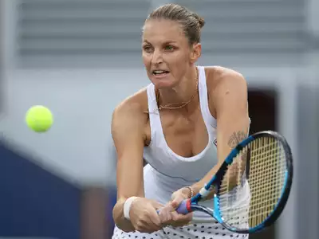

WTA player to 2/5 to 2/11/24: Karolina Pliskova

Karolina Pliskova of the Czech Republic is a former world number 1 and had not won a single title since January of 2020 at the Brisbane International Open. Over the last year and half Pliskova's ranking has dropped to her lowest ranking in a while which was 78. Coming into this tournament, Pliskova was unseeded. In the 1st round, she beat Sinja Kraus of Austria 6-4, 7-6. In the second round, she beat Camila Osorio Serrano of Colombia 6-2,6-1. In the quarter finals, she cruised past Sara Errani of Italy 6-2,6-0. In the semi finals,she beat Harriet Dart of Great Britain 6-3,6-3. In the final, she beat Ana Bogdan a home favorite 6-4,6-3. Overall, this tournament was a confidence boaster for Karolina and should give her more confidence going foreward.